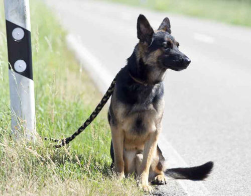

Événement : Journée nationale contre l'abandon
Juste Un Coup de Patte est fier de célébrer la Journée nationale contre l'abandon avec un événement
spécial le 24 juin 2023. Cette journée vise à sensibiliser le public aux conséquences de l'abandon d'animaux de compagnie, qui est un problème
croissant dans notre société. Nous avons créé cet événement pour célébrer les animaux de compagnie et encourager la responsabilité des
propriétaires d'animaux.
Notre événement comprendra des activités pour toute la famille, notamment des concours, des présentations
d'adoption d'animaux de compagnie et des conférences sur la responsabilité des propriétaires d'animaux. Nous aurons également des stands
de nourriture et des vendeurs locaux pour profiter d'une journée amusante en famille tout en soutenant une cause importante.
En
participant à notre événement, vous contribuerez à sensibiliser les gens à l'importance de prendre soin de leurs animaux de compagnie et de
les traiter avec amour et respect. Vous pourrez également rencontrer nos animaux de compagnie disponibles pour adoption et peut-être trouver
votre prochain compagnon de vie. Ensemble, nous pouvons faire la différence et mettre fin à l'abandon d'animaux de compagnie.
Nous
espérons vous voir nombreux à notre événement pour célébrer la Journée nationale contre l'abandon et faire une différence dans la vie des
animaux de compagnie. Pour plus d'informations sur l'événement et pour vous inscrire, veuillez consulter notre page Événements.